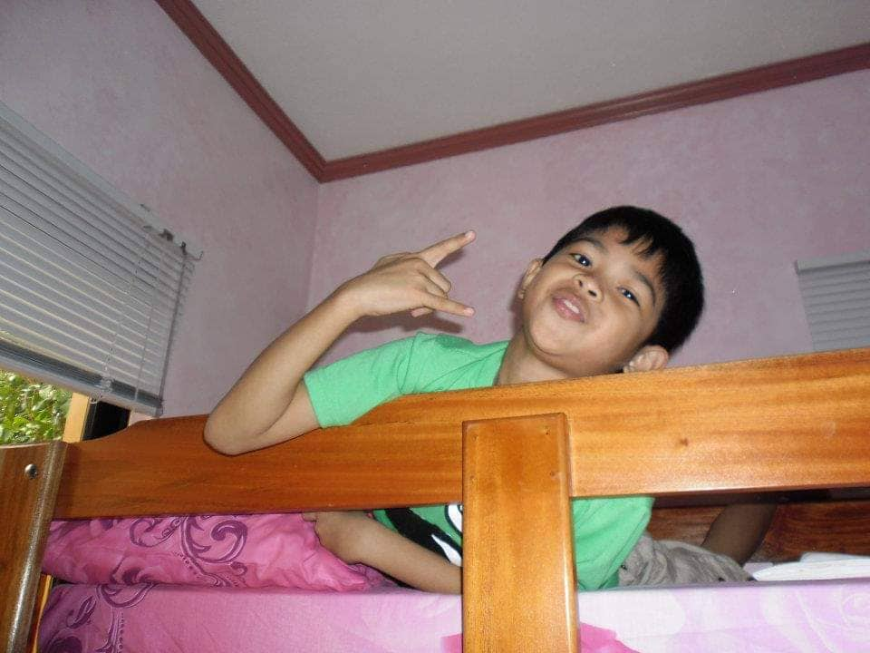

CHILDHOOD YEARS
When I was young I didn't care about life and only think about what makes me happy1. I like color green but my clothes are mostly blue2. I don’t know why, but yeah3. I like watching cartoons on the television4. My favorite show was tom and jerry5. It is very entertaining and fun to watch6. I don't really like going to school when I was young7. Socializing with other people just makes me tired8. I like minding my own business and being alone9. After a few months of being in school, I became friends with some of my classmates10. I enjoyed having a company for the first time11. I had my first bestfriend in school12. We played a lot of games and talk about our hobbies13. We also helped each other a lot especially on homeworks14. I even visited his house for a few times15. Becoming friends with my classmates was the highlight of my childhood16. I also like to play with my neighbour outside17. I remember getting scolded for playing outside until evening18. Life was good that time, it was fun19. Having friends and playing games was basically my childhood20.

TEENAGE YEARS
My teenage year was about finding or knowing more about myself1. I've changed a lot because of the people around me2. I started to like being alone again3. Playing games with my phone or watching series was my hobby4. It just feels nice and comfortable when you spend your time by yourself5. I got to know what I like without faking my personality just to get accepted by others6. I was also a student from a christian school which made me know more about God7. Every week we have chapel hours and pastors are preching and telling stories from the bible8. Most of the stories was interesting and has a lot of lessons to be learned9. I became a religious person back then because of my school and my sister10. My sister dedicated herself to God that's maybe one of the reasons I became religious too11. I also competed with other school back then because I like to solve problems and my teacher said that I should try to compete12. I didn't win but it was a great experience13. I just like studying and having a good grades when I was a teenager14. I was one of the top students on the class15. I get sad when my grades are low because I put high expectation on myself16. I don't like hanging out as much as I did when I was a child17. I like dancing or performing on stages that's why I joined the dance team on my school18. It was fun but tiring when we practice19. That was my experiences on my teenage years20.
COLLEGE YEARS
When I was about to enter college, the pandemic happened1. I stopped going to school for 1 year2. I didn't enroll because I was unfamiliar with the online set-up that time3. I thought the pandemic would last less than a year, that is why I stopped studying4. Then, the next school year the university announced that it would still be online classes that is when I decided to just go with the flow5. I enrolled for SY. 2021-2022 on my 1st year college6. Surprisingly, I find it easy and better than the face to face classes7. I liked it because I have more time to do the activities compared to face to face classes8. Commuting takes up a lot of time and energy on your daily life9. I ride jeepney and LRT2 to get to the university which is around 60-75mins10. I don't have to worry about getting up early tomorrow to prepare11. I had more time for myself when I was taking online classes12. I was really relaxed and calm that time13. This has recently changed because the classes are now held in person14. Waking up early and going home at night is a struggle15. I don't have much time and energy to do the assignments16. I'm usually tired and sleepy when I get home17. It's really hard when there's a quiz tomorrow but you don't have the energy to study18. That is why I always use the weekends to study19. I just need to make plans and to manage my time properly so that I can survive the college life20.
Go back to homepage